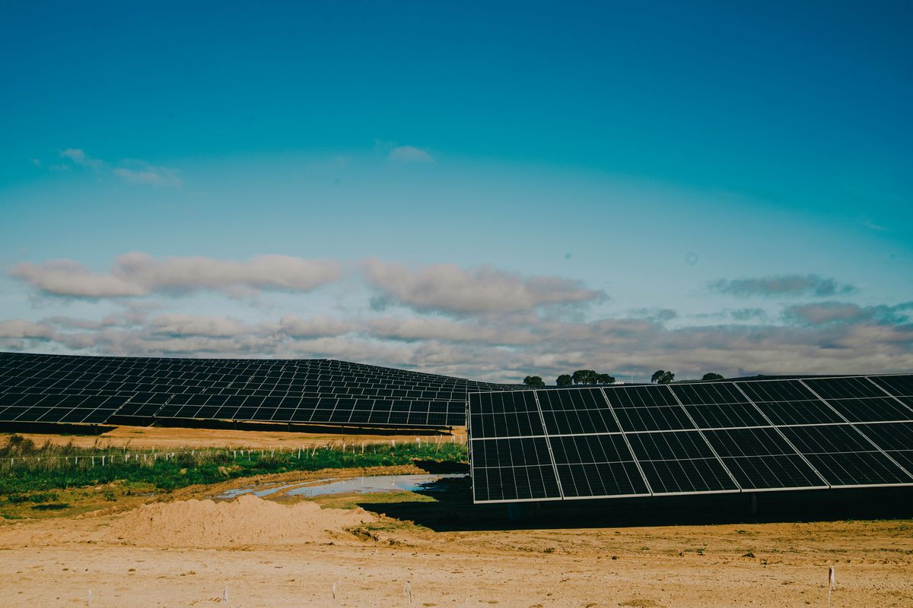

There's a common assumption that the hotter and sunnier it is, the more electricity solar panels make. The first half is right — more sun means more energy — but the heat itself works against you. Solar panels convert light into electricity, not heat, and rising temperature actually reduces how efficiently they do it. In hot climates this is one of the most important and most misunderstood factors in real-world production.
Why heat reduces output
A solar cell is a semiconductor, and like all semiconductors its behavior changes with temperature. As a panel heats up, its voltage drops, and since power is voltage times current, the panel's output falls with it. The sunlight hitting the panel doesn't change — but the panel's ability to turn that sunlight into usable power gets worse the hotter it becomes.
Panels are rated at a cell temperature of 25 degrees Celsius under standard test conditions. Out in the field on a hot day, a panel sitting in full sun can easily reach 60 to 70 degrees — far above its rated temperature. That gap between the lab rating and the real rooftop temperature is exactly where production quietly disappears.
The temperature coefficient
Every panel's datasheet lists a temperature coefficient of Pmax — a number like -0.35%/°C or -0.45%/°C. It tells you how much power the panel loses for every degree above 25 °C. For example, at a coefficient of -0.4%/°C, a panel running at 65 °C (40 degrees above rated) loses about 16% of its power compared to its nameplate figure.
This is why the temperature coefficient matters so much in hot regions: two panels with identical wattage on paper can perform noticeably differently in summer heat if one has a better (closer to zero) coefficient. When you're buying for a hot climate, this single spec is worth paying attention to. Our string sizing calculator also accounts for temperature when working out safe voltage windows, since cold and hot extremes both shift panel voltage.
On one of our projects — a 40 MW plant in Mafraq, a semi-desert area of Jordan — we saw this clearly on the hottest days. During peak summer, the high temperatures visibly reduced production, because the cells depend on light rather than heat, and once the modules got extremely hot the output dropped. Compared to the milder spring weather, production was actually higher in spring even though summer sun feels stronger. My advice to anyone installing in a hot region: choose panel types that handle heat well, leave a ventilation gap under the panels, and clean the dust off regularly.
Heat and dust: a double hit
In hot desert climates, heat rarely comes alone — it comes with dust. And the two compound each other. Dust blocks a portion of the incoming light, while heat reduces the efficiency of whatever light does get through. A panel that's both dusty and running hot can fall well short of its rated output. This is why in dry, hot regions a regular cleaning schedule isn't optional cosmetic upkeep — it's a core part of keeping production up. Our guide on solar panel maintenance covers cleaning frequency in detail.
Practical steps for hot climates
- Leave a ventilation gap. Mount panels with an air gap beneath them so air can circulate and carry heat away. Panels pinned flat against a hot roof or surface run much hotter and lose more output.
- Choose panels with a good temperature coefficient. In hot regions, a coefficient closer to zero (e.g. -0.30 to -0.35%/°C) pays off across every summer for the life of the system.
- Clean regularly. Dust and heat together are worse than either alone. A regular cleaning schedule recovers a surprising amount of lost output.
- Design tilt and layout for airflow. A proper tilt angle not only improves sun capture (see our panel tilt calculator) but also helps air move behind the modules.
- Size with real conditions in mind. Don't assume nameplate output in summer. Our energy production calculator lets you apply realistic loss factors so your estimates match what the system actually delivers.
Hot regions are still excellent for solar
None of this means hot climates are bad for solar — quite the opposite. Desert and hot regions receive enormous amounts of sunlight and many peak sun hours, which far outweighs the efficiency lost to heat. The point isn't to avoid solar in the heat; it's to design for the heat. Ventilation, smart panel selection, and regular cleaning are what let you capture as much as possible of all that abundant sunlight. A well-designed system in a hot region will still comfortably out-produce the same system in a cooler, cloudier place.
Frequently asked questions
Do solar panels produce less in hot weather?
Yes. Panels run on light, not heat, and output drops as they get hotter — roughly 0.3 to 0.5% per degree Celsius above 25 °C. On a hot day a panel can reach 60 to 70 °C and lose 15 to 20% of its rated output, even in strong sun.
What is the temperature coefficient of a solar panel?
It's a datasheet figure (Pmax coefficient) showing how much power a panel loses per degree above 25 °C. A coefficient of -0.35%/°C handles heat better than -0.45%/°C, so it matters most in hot climates.
How can I reduce heat losses in a solar installation?
Leave an air gap under the panels for ventilation, avoid mounting flat against hot surfaces, pick panels with a good temperature coefficient, and keep them clean since dust makes the problem worse.
Are hot desert regions still good for solar?
Yes. They get very high irradiance and many peak sun hours, which more than offsets the efficiency lost to heat. The key is designing for the heat with ventilation, good panel choice, and regular cleaning.